結論から言うと、
最初に見るべき候補は、
この2社で大丈夫でした。

この記事、正直に書きますね。
金の買取店って、どこも「業界最高値！」ばっかりで、
正直どこが違うのか分からないですよね。
いちばん知りたいのは
「結局、いくらで売れるの？」
なのに。
なので、金・貴金属をやってる主要9社を1社ずつ、公式の買取条件・手数料・実績・口コミまでぜんぶ調べて、気になる店には実際に査定にも出して、
「最終的な手取りが高くなる可能性があるか」という視点で、かなり細かく比較しました。
ここからさき、「なぜ、最初の候補をこの2社にしたのか」を説明します。
ここで一度、売る前の迷いを整理します
「売るなら今かもしれない。
でも、どこへ持ち込めばいいの？」
大手チェーン、街の質屋、リサイクルショップ、ネットの宅配専門店……。「金を売ろう」と検索すると、山ほど出てきます。どこも判で押したように「業界最高値」「高価買取」を掲げていて、正直、違いが分かりません。
検索結果には広告枠も自然検索も混ざるため、「上に表示されている＝高く売れる店」ではありません。検索順位だけでは、あなたの品の最終的な手取りまでは分からないからです。
さらに迷うのが、比較サイトです。
「おすすめ金買取店ランキング」を見ても、サイトごとに1位の店舗がバラバラ。あるサイトではまねきやが1位、別のサイトではおたからや、さらに別のサイトではなんぼや……というように、順位がまったく違います。
どのサイトも「おすすめNo.1」「高価買取」と書いてあるため、結局どれを信じればいいのか分からないという人も多いでしょう。
そこで本記事では、店名の順位ではなく、「最終的な手取りが高くなる可能性があるか」という視点で比較しました。
- 「上に表示されている＝高く売れる店」ではない
- ランキングではなく、最終的な手取りで比べる
- 査定の根拠まで確認して決める
今、金を売るべきか？
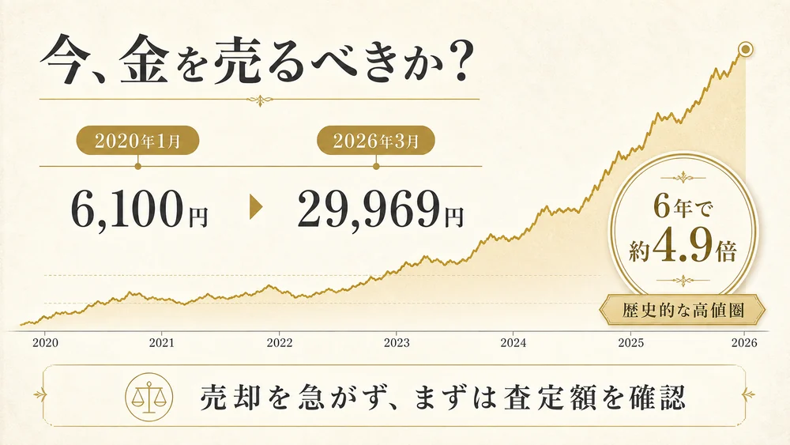
金の店頭価格は、長期で見れば歴史的な高値圏で推移しています。だからこそ「今、売るべきか」と迷う方も多いはずです。
ただし、金価格は世界情勢・為替・金利などの影響を受けて日々変動します。これからさらに上がることも、現在の水準から下がることもあり得るため、将来の価格を断言することはできません。
売却を急ぐ必要はありません。一方で、店頭・出張・宅配のいずれでも査定から売却まで進められる状態です。売らないと決めていても、相場が高水準のうちに一度だけ査定を受け、手取りの目安を確認しておく価値はあります。
金額を見てから売るか決めればよく、査定が売却の約束になるわけではありません。
- 相場は歴史的な高値圏
- これからの価格は、誰にも断言できない
- まずは査定で、いまの手取りを確認
では本題です｜なぜ、この2社なのか
理由は、ランキング順位ではありません。金の「最終手取り」がどう作られるかを、公式情報で具体的に確認できたからです。
金の査定額は、1g単価だけでは決まりません
当日の買取単価 × 品位 × 正味重量石・デザイン・ブランドの評価手数料
同じK18の指輪でも、石の重さをどう扱うか、刻印がない品をどう測るか、地金以外の価値を乗せるかで、手取りは変わります。見るべきなのは「高価買取」の広告ではなく、この計算の根拠を説明できる査定かです。
その視点で調べると、まねきやとおたからやは、どちらも価格・純度の根拠を確認しやすい一方で、役割が異なります。まねきやは手取りの内訳まで聞きたいときの第一候補、おたからやは近くで査定額を取りたいときの候補です。
-
両社とも、当日の価格と純度の根拠を確認できる比較の土台
まねきやは貴金属の当日価格とX線分析機器による査定を案内し、おたからやも純度別の参考買取相場を毎日更新して、X線分析による品位判定を案内しています。見た目や広告文だけではなく、価格・重量・純度を同じ物差しで質問できることが、2社を最初の候補にした理由です。
-
まねきやは、地金以外の価値も確認すると公表している
まねきやは、重さから差し引かれやすい宝石やデザインの価値も含めて査定すると案内しています。また、一般向け価格ではなく業者向け取引価格を案内するとしています。最終額の保証ではありませんが、石付きリング・ジュエリー・ブランド品を「金の重さだけ」で終わらせないか、明細で確認する出発点になります。
-
おたからやは、近くで査定額を取りやすい
おたからやは、2026年7月時点で世界約1,920店舗以上を公表しています。店舗・出張の相談窓口が近い地域では、当日の参考相場と実際の査定額を確認しやすいのが強みです。まねきやの店頭・出張査定を選びにくいときの、現実的な候補になります。
-
選び方を、状況ごとに決めやすい
最寄りのまねきやで店頭・出張査定を選べるなら、まずはまねきやで価格・純度・石やデザインの評価・手数料を確認。近くで査定を受けたい、またはもう一つの見積もりがほしいなら、おたからやで同じ4項目を聞く。この順番なら、店名の順位ではなく、あなたの品の手取りで決められます。
査定で、必ず確認する4項目
- 今日の1g単価と、どの品位で計算したか
- 重量と、石の重さを差し引いたか
- 石・デザイン・ブランドに、いくら価値を付けたか
- 手数料・キャンペーンを反映した最終手取りはいくらか
「業者用取引価格」や参考相場は、最終買取額を保証するものではありません。必ずこの4項目の明細を確認し、納得できなければ売らずに持ち帰りましょう。
根拠：まねきや公式（業者用取引価格・石／デザイン評価）／まねきや公式（X線分析機器）／おたからや公式（金相場の算出根拠）／おたからや公式FAQ（蛍光X線分析）（2026年7月確認）
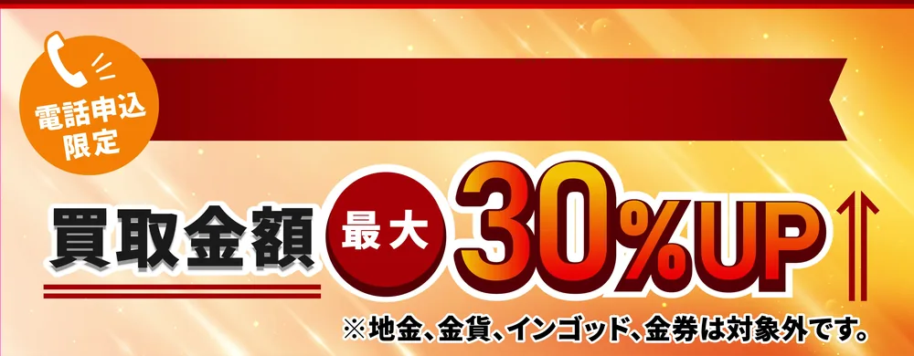
今月末まで※ 地金・金貨・インゴット・金券は対象外です。上乗せ率の上限・適用条件があります。
では、あなたはどちらから査定すべきか
答えはシンプルです。最寄りでまねきやの店頭・出張査定を選べるなら、まずまねきや。近くで査定を受けにくい、またはもう一つの見積もりがほしいなら、おたからやを選びます。
結論｜店頭・出張で動きやすい地域から選びます
はいまず、まねきや

業者向け取引価格を案内し、石・デザインも確認する方針を公開。電話申込なら、対象品・適用条件を満たす場合に買取額 最大30%UPです。
まねきやを選べる地域なら、まず価格・純度・石やデザインの評価・手数料を確認してください。比較したいとき、または近くで査定を受けにくいときは、おたからやでも同じ項目を聞く。売るかどうかは、2つの数字を見てから決めて大丈夫です。
まねきやの主な出店エリア
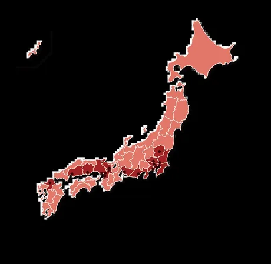
- 東京
- 神奈川
- 千葉
- 埼玉
- 茨城
- 栃木
- 愛知
- 静岡
- 京都
- 大阪
- 兵庫
- 岡山
- 広島
- 香川
- 福岡
- 熊本
※ 店頭・出張の対応可否は、品物・訪問先・予約状況で変わります。宅配は全国から利用できますが、返送料を含む条件は申込前にご確認ください。最新の店舗一覧はこちら。
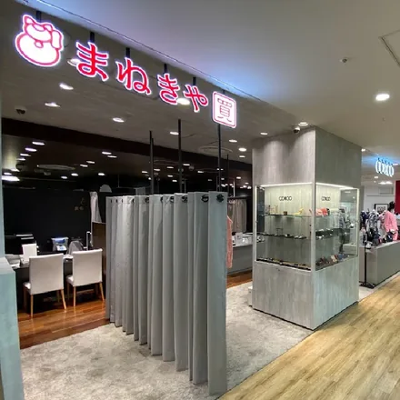
銀座本店東京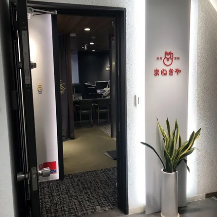
上野御徒町店東京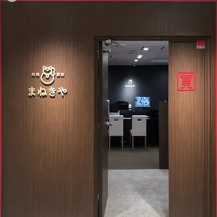
横浜本店神奈川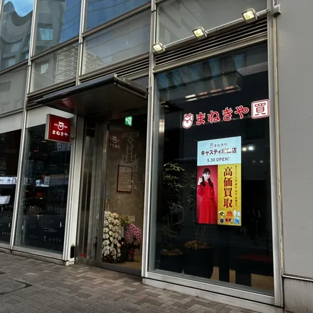
キャスティ川口店埼玉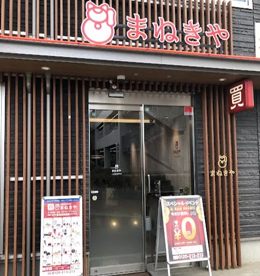
つくば研究学園駅前店茨城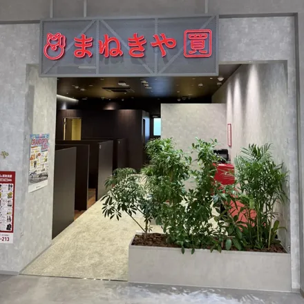
フレスポうつのみや市場店栃木- 名古屋栄本店愛知
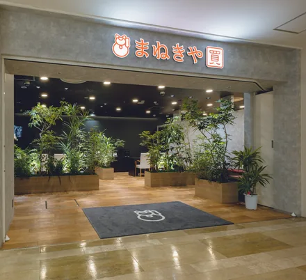
静岡本店静岡- 京都四条本店京都
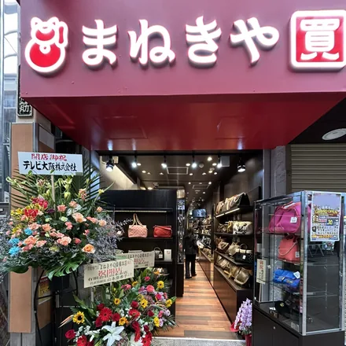
心斎橋本店大阪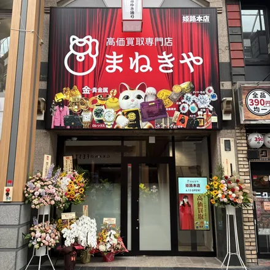
姫路本店兵庫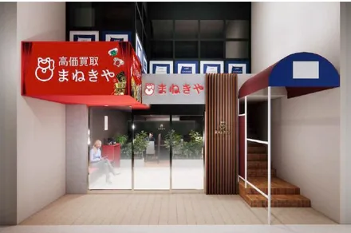
高松兵庫町店香川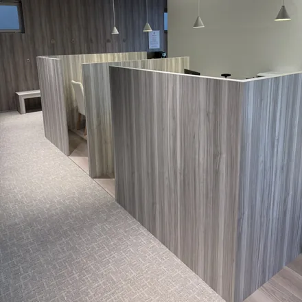
天神西通り本店福岡- 熊本本店熊本
上記は店舗例です。出店・営業時間は変わるため、最新の店舗案内をご確認ください。
まず、2社がどういう会社なのか
比較サイトの多くは「店舗数」と「口コミ」しか載せていません。ここでは会社の規模・体制まで並べます。
| 項目 | まねきや | おたからや |
|---|---|---|
| 運営会社 | 株式会社水野 | 株式会社いーふらん |
| 設立 | 2009年7月 （創業2008年9月） | 2000年3月 |
| 資本金 | 1億975万円 | 4億8,000万円 |
| 従業員数 | 160名 | 1,863名 |
| 売上高 | 50億700万円 （2025年6月期） | 989億円 （26期） |
| 本社 | 東京・大阪 | 横浜みなとみらい |
| 店舗網 | 関東・東海・関西・中国・四国・九州などに展開 | 世界約1,920店舗以上（2026年7月時点） |
| 海外展開 | 独自の海外販売ルート | 海外子会社7か国 |
※ 各社公式の公表値（2026年7月時点）。まねきやの従業員数は2026年3月時点、おたからやは2026年4月1日時点。
店舗網の広さと、買取額の根拠は別の話です
おたからやは近くで相談しやすい規模が強みです。一方で、あなたの買取額は、品位・重量・石やデザインの評価・手数料・キャンペーン条件で決まります。次に見るべきなのは、会社の大きさではなく、その内訳です。
全体像も確認したい方へ｜金の買取9社を比較
「おすすめランキング」は、サイトごとに1位が違い、なぜ上位なのかまで説明されていないことも少なくありません。
そこで、公式の買取条件・手数料・実績・口コミと、実際の査定結果を同じ視点で確認しました。各社の向き・条件・例外を、ここでまとめて確認できます。
| 店名 | 強い品目 | 金適性 | 特典 | 手数料 | 方法 | 状態不良品 | 注意点 |
|---|---|---|---|---|---|---|---|
| まねきや | 金 | ◎ | 最大30%UP 金手数料10%無料 | 無料 | 店頭・出張・宅配 | 刻印なし等も相談 | 金貨・インゴットは特典対象外 |
| おたからや | 金 | ◎ | 抽選で10万円 | 無料 | 店頭・出張 | 状態不良も相談 | 店舗ごとの条件差に注意 |
| ブラリバ | 宝石 | ○ | 初回20%UP系 | 無料 | 店頭・宅配・出張 | 個別判断 | 石・ブランド込み向き |
| なんぼや | 時計 | ○ | 新規5,000円UP | 無料 | 店頭・宅配・出張 | 相談 | ブランド品とまとめ向き |
| 大黒屋 | 時計 | ○ | ジュエリー10%UP等 | 無料 | 店頭・宅配・出張 | 相談 | 総合買取・金券にも対応 |
| コメ兵 | ブランド | ○ | 最大10%UP | 無料 | 店頭・宅配・出張 | 相談 | 地金単体は相見積もりを |
| ゴールドプラザ | 金 | ○ | 喜平・金貨等の特典 | 無料 | 店頭・宅配・出張 | 要確認 | 対象・地域の条件が細かい |
| バイセル | 整理品 | △ | 抽選で5倍 | 無料 | 出張・店頭・宅配 | 相談 | 金単体よりまとめ売り向き |
| ジュエルカフェ | 金 | △〜○ | 20%UP系 | 無料 | 店頭・宅配・出張 | 相談 | 高額品は相見積もりを |
なぜ、店によって最終手取りが変わるのか
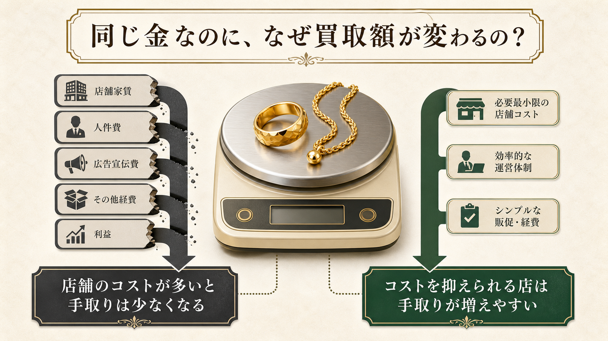
金の国際相場や国内の地金相場は、各店が見る共通の基準です。ただし、店頭であなたの品に付く最終額まで同じではありません。
違いが出るのは、買取単価・品位と重量の判定・石やデザインの評価・手数料・キャンペーン条件です。
当日の基準価格 × 品位 × 重量
＋ 石・デザインの評価 − 手数料
＝ あなたの手取り
店の運営コストや再販先も、買取単価の考え方には影響します。だからこそ、表示された「高価買取」だけで決めず、何を根拠に、最終いくらになるのかを確認することが大切です。
「手数料無料」の、ほんとの話
「手数料無料」は大事な条件ですが、それだけでは比較できません。同じ無料でも、買取単価や石の扱い、キャンペーンの対象外によって最終手取りは変わるからです。
見るべきなのは、表示の単価だけではありません。売る側が明細を見て、計算の前提を確認できるかです。
| 確認する項目 | 手取りにどう影響するか | 査定時に聞くこと |
|---|---|---|
| 1g単価と品位 | 土台となる金額が決まる | 今日の単価と、何Kとして計算したか |
| 重量と石の扱い | 石の重さの控除や、石・デザインの評価で差が出る | 石を差し引いた重量と、石・デザインの評価額 |
| 手数料と特典 | 表示額からの控除・上乗せ条件が変わる | すべて反映した最終手取り額 |
まねきやは本日の貴金属相場を公式サイトで公開し、業者向け取引価格を案内すると明記しています。ただし、公式にも形状によって価格が異なる旨があります。表示価格をそのまま鵜呑みにせず、あなたの品の最終額と内訳を確認することが大切です。
相場と明細を見れば、「なぜその金額なのか」をその場で確かめられます。これが、「高く買います」という言葉より大切です。
おたからやの実力
強み①｜全国に広がる店舗網で、近い場所から始めやすい
おたからやは、2026年7月時点で世界1,920店舗以上を展開すると公表しています。店頭または出張で相談を始めやすく、まず近い店舗で実額を聞けることが大きな強みです。地域によっては、比較のためのもう一つの査定先としても選びやすいでしょう。
強み②｜刻印がない品も、X線分析で純度を確かめられる
公式では、刻印がない金・プラチナも蛍光X線分析装置で含有量を測定し、純度と重量をもとに査定すると案内しています。切れたチェーン、片方だけのピアス、古い海外製ジュエリーなど、「これは金として見てもらえるのか分からない」品を持ち込みやすいのは実用的な強みです。
強み③｜地金の重さだけでなく、ブランド・デザインも確認する方針
おたからやは、ブランドの金製品について地金価値とブランド価値の両面を見て査定すると案内しています。宝石・ブランドジュエリー・アンティーク性のある品は、金の重さだけで売る前に、石・デザイン・付属品を含めた評価額を聞く意味があります。
強み④｜査定・出張・見積もりの費用は無料と案内
金地金・貴金属については、査定料・出張料・見積もりの費用を無料と案内しています。売却するかは査定額を聞いてから決められるため、まねきやが利用しにくい地域で、まず金額の基準を作りたいときにも使いやすい選択肢です。
強み⑤｜キャンペーンは「条件まで」確認して使う
公式サイトでは期間限定の増額企画も案内されています。ただし、対象店舗・品目・上限額は企画ごとに異なります。店頭で目立つ「◯％UP」だけを見ず、キャンペーンを反映した後の最終手取りと、対象外になる品をその場で確認してください。
利用前に確認したいこと
店舗数が多いぶん、営業時間・予約の要否・実施中のキャンペーンは店舗や時期で変わります。査定を頼む前に、当日の受付可否、手数料、キャンペーンの対象条件、明細の出し方を確認してください。
近いからこそ、明細まで見て決める
おたからやの強みは、近くで査定額を取りやすいことです。金額を聞いたら、1g単価・品位・重量・手数料を反映した最終手取りまで確認してから決めましょう。
根拠：おたからや公式（店舗数・費用・キャンペーン条件）／金地金買取ページ（蛍光X線分析・費用）／公式FAQ（ブランド金製品の評価）（2026年7月確認）
まねきやの実力
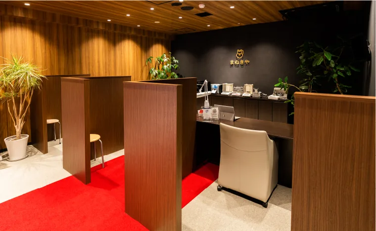
まねきやは、金・貴金属だけでなく宝石・時計・ブランド品も取り扱い、公式サイトでは査定の根拠や分析機器、買取実績を公開しています。店頭での対応や当日の現金化は店舗・品物によって変わるため、予約時に確認しましょう。
強み①｜金の「重さ」だけで終わらせない査定
他店と差がつく、価値の見方
宝石・デザインも含めて、
品の価値を見極める。
素材をきちんと判定することが、品物の価値を取りこぼさない第一歩です。まねきやは、重さから差し引かれがちな宝石やデザインの価値も含めて確認する方針を公式に示しています。
石付きジュエリーだけでなく、小さい金や品位が低い金も、素材を見極めたうえで評価すると案内しています。だから「K18だから何gでいくら」だけで、急いで決める必要はありません。
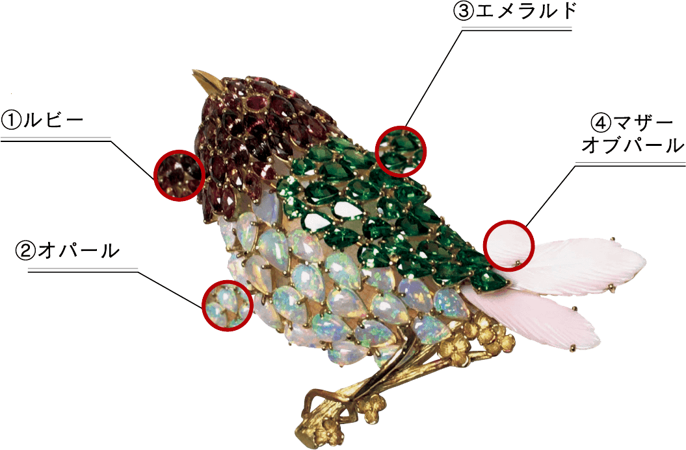
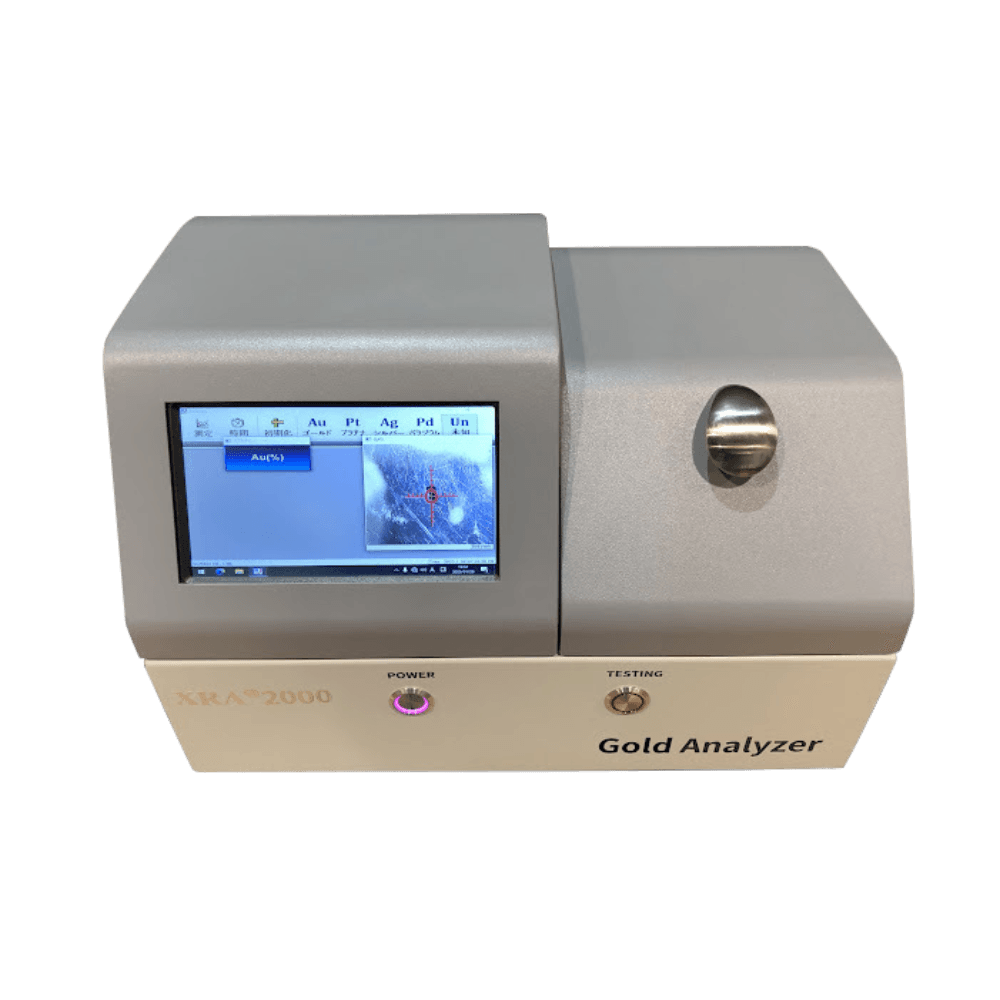
刻印だけに頼らないX線分析機で、金の品位を確認する方針を公開
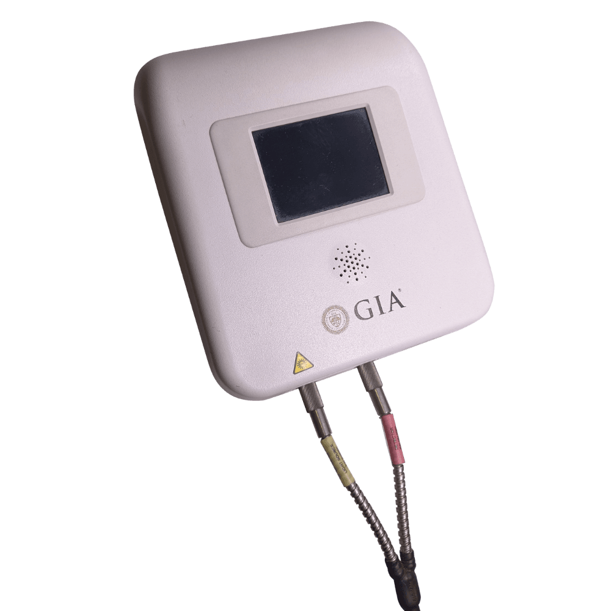
石も個別に確かめるダイヤモンド分析機器など、専用機器の掲載あり
公式掲載の宝石買取実績 一例
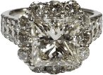
2.37ct リング400万円
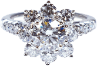
1.041ct リング110万円
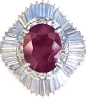
2.90ct リング250万円
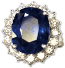
10ct リング410万円
画像・内容：まねきや公式「金・貴金属買取」（2026年7月確認）。掲載例であり、同等の買取額を保証するものではありません。
強み②｜査定の根拠を質問しやすい
金の土台となるのは重さ × 純度 × その日の相場です。まねきやは当日相場とX線分析機器を公開しているため、石付き・刻印なしの品でも、何をどう評価したのかを聞くための材料があります。担当者による差が完全になくなるわけではないからこそ、明細で確認することが大切です。
強み③｜当日の相場を事前に確認できる
まねきやの公式サイトには本日の貴金属相場が掲載され、純度別の目安を確認できます。
ただし、表示価格と実際の手取りは同じではありません。形状・重量・石やデザインの評価・手数料の扱いまで聞いて、あなたの品ならいくらになるかを確かめましょう。
相場を見て、
明細を聞く。
これが、提示額の妥当性を判断するもっとも現実的な方法です。なお、おたからやも純度別の参考買取相場を毎日公開しています。どちらの店でも、表示価格だけで決めず最終手取りを比べることが大切です。
強み④｜X線分析機で純度を数値化
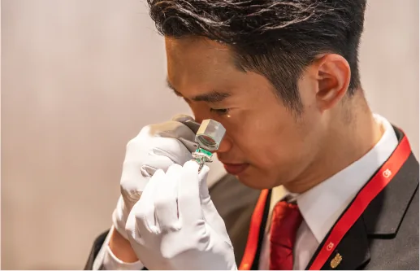
目視ではなく、機械で測る
目視や試薬による簡易判定ではなく、X線分析機で含有量を測定します。刻印が消えている物、そもそも刻印がない物でも、純度を数字で確認できます。
数値が出る＝根拠が示せるということ。「だいたいこれくらい」ではなく「純度は何%です」と提示されます。
純度別の相場は、査定直前に公式で確認
金・プラチナ・銀の価格は日々変動するため、固定の金額表は載せません。まねきや公式の当日相場で確認し、査定時には品位・重量・形状を踏まえた最終手取りを聞きましょう。
強み⑤｜金・貴金属の買取実績を公開している
まねきやは、インゴット・ジュエリー・喜平・金歯などの買取実績を公式サイトで公開しています。実績は同額を保証するものではありませんが、自分の品に近い事例と、何を評価したかを確認する材料になります。
| 品目 | 買取金額 |
|---|---|
| インゴット 1kg | 2,768万2,000円 |
| ジュエリー各種（まとめ） | 3,675万円 |
| 喜平ネックレストップ | 793万円 |
| 金歯 | 96万円 |
| 金板の破片 | 75万円 |
※ まねきや公式サイト掲載の買取実績より。特定の取引例であり、同等の金額を保証するものではありません。高額取引時の本人確認書類・支払方法は品物や取引条件で異なるため、申込時にご確認ください。
主な買取対象
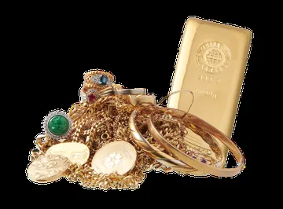
金・貴金属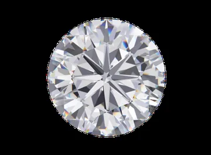
ダイヤモンド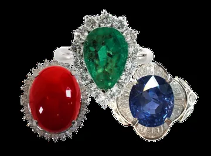
色石・宝石- ブランド品
このほか、時計・着物・骨董品・絵画・古銭・切手・万年筆・カメラ・洋酒・金券・鉄道模型まで対応しています。遺品整理などで複数ジャンルをまとめて売りたい場合は、対象品を事前に伝え、一度に査定できるかを確認しておくと手間を減らせます。
強み⑥｜21時まで受付／ロゴなし車両
電話受付は9:00〜21:00です。日中に動きにくい方は、予約を取りやすい時間帯の一つになります。おたからやの電話受付時間は店舗・窓口で異なるため、利用する店舗の案内を確認しましょう。
出張買取では社名ロゴの入っていない車両で訪問します。「買取店の車が家の前に停まっているのを近所に見られたくない」——長くその土地に住んでいる方ほど、この配慮は効きます。
強み⑦｜第三者認証を取得している
- プライバシーマーク（認定番号 17003773）— 個人情報の管理体制が第三者機関の基準を満たしていることの証明
- AACD加盟（会員番号 R-0100）— 不正品の排除に取り組む業界団体
- 古物商許可— 中古品を取り扱う事業者として必要な許可を掲示しています
買取では住所・氏名・身分証という重い個人情報を渡します。その管理体制が外部基準で確認されているかどうかは、本来もっと重視されるべき点です。
弱み｜正直に3つ書きます
- 店頭・出張を利用できるかは地域・品物・予約状況で変わります。近くで動きにくい場合は、おたからやを含めた近隣店で査定額を確認するほうが現実的です
- 宅配で返却になった場合、返送料が自己負担となる条件があります。申込前に、返送料を含む条件を確認してください
- 品物によっては専門店のほうが向くことがあります。ブランド時計・美術品・大型の不用品などは、専門店とも比較しましょう
ここまでの強みだけで「どんな品物でも、まねきやが最適」とは言えません。自分の品に合う評価ができ、最終手取りを明細で説明してくれるかを、実際の査定で確かめることが大切です。
最大30%UPは、電話申込限定です
ここだけは間違えないでください
現在実施中の買取金額 最大30%UPは、お電話での申込が対象です。
WEB予約でも査定は無料で受けられますが、上乗せを受けたい場合は電話から申し込んでください。同じ品物でも、申込方法だけで結果が変わります。
※ 上限額・適用条件があります。詳しくは申込時にご確認ください。
どの店を選んでも、損をしない5つのコツ
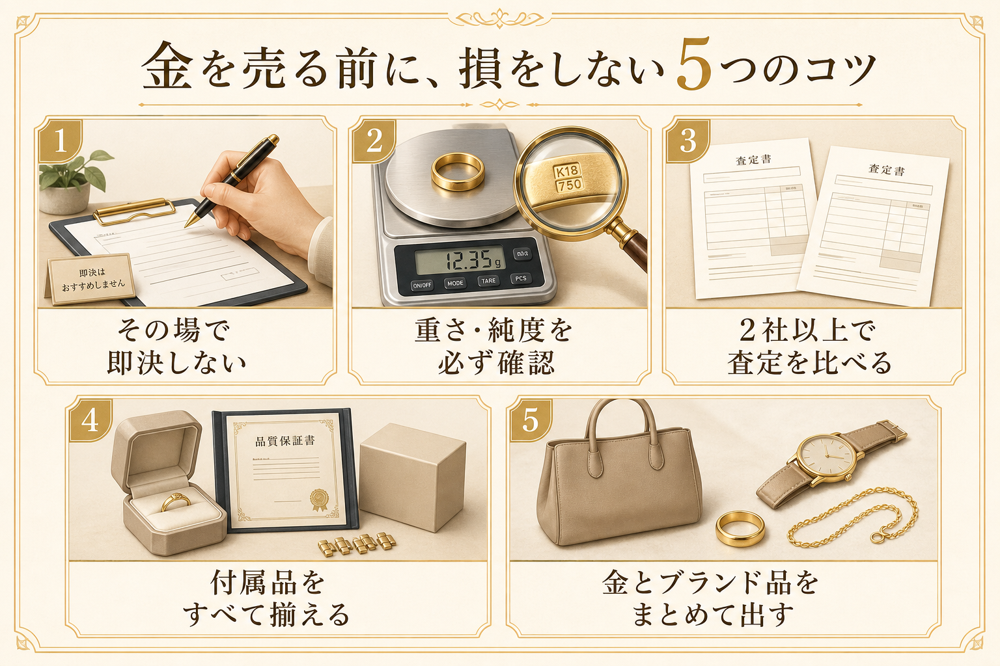
- その場で即決しない
- 重さと純度を確認する
- 可能なら2社に出す
- 付属品を揃えてから出す
- ブランド品もまとめて出す
コツ1｜その場で即決しない
「今日決めてくれるなら、もう少し上げます」——これは判断を急がせる常套句であることがあります。金は逃げません。迷ったら「一度持ち帰って考えます」で構いません。それで態度が変わる店なら、そもそも売るべきではないという判断材料になります。
コツ2｜「重さ」と「純度」を必ず確認する
金の買取額は、突き詰めれば 重さ（g）× 純度 × その日の相場 で決まります。査定時は目の前で量ってもらい、グラム数と純度（K18・K24など）を確認してください。この2つと当日の相場が分かれば、提示額が妥当か自分で概算できます。
明細を出さない、量る場面を見せない店には注意が必要です。
コツ3｜可能なら2社に出す
最終手取りを確かめるには、複数社の査定が有効です。ただし、査定料・キャンセル料・返送料の条件は、方法や品物で変わります。先に条件を確認したうえで、近い店から同じ品を査定に出し、①品位 ②重量 ③手数料 ④最終手取りを同じ条件で比べましょう。
コツ4｜付属品は、すべて揃えてから出す
鑑定書、購入時の箱、保証書、替えのコマ——こうした付属品が揃っているだけで査定額が上がります。特にブランド品・時計は顕著です。「捨てずに取っておいた箱」が、数千円〜数万円の差になることがあります。
コツ5｜金とブランド品は、まとめて出す
金の指輪だけでなく、使わないブランドバッグや時計も一緒に査定に出すと、まとめて評価できる店があります。ただし、まとめ売りが常に有利とは限りません。ブランド品・時計は専門店の査定額も比べ、品目ごとに最終手取りが高い方法を選びましょう。
こんな業者は、その場で帰ってOKです
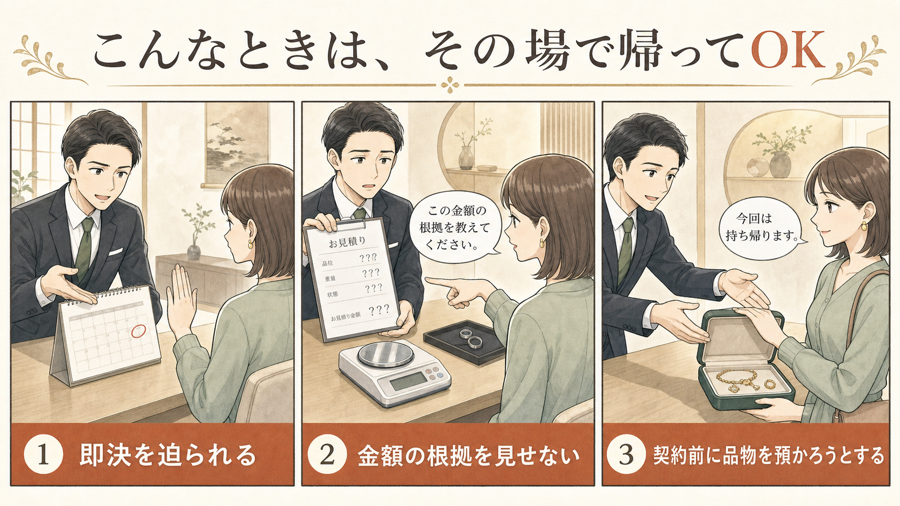
大半の買取店はまっとうですが、ごく一部に悪質な業者もいます。次のいずれかに当てはまったら、契約せず帰って構いません。
危険信号のチェックリスト
- 「今日決めてくれたら」と即決を迫る。急がせるのは、相場を調べさせない狙いのことがあります
- 不安や同情に訴えてくる。「これは価値がない」「処分に困るでしょう」で安く買い叩く手口
- 金額の根拠を出さない。重さ・純度・相場の内訳を見せず「まとめて◯円」とだけ言う
- その場で品物を持って行こうとする。契約前に品物を預ける必要はありません
目の前で量り、純度・相場・手数料の根拠を示し、質問に答えてくれるかを確認しましょう。売却を急がせず、持ち帰って比較する選択肢を認めてくれることも、安心して相談できるかを判断する材料になります。
金を売ったときの税金｜地金とアクセサリーで扱いが異なります
税金は、売却額ではなく利益と品物の種類で決まります。国税庁によると、金地金の売却益は原則として譲渡所得です。売却額から取得費と売却にかかった費用を引いて計算します。
一方で、日常生活で使っていたアクセサリーなどの生活用動産は原則非課税です。ただし、1個または1組の価額が30万円を超える貴金属・宝石・美術品等は、この非課税の対象外です。購入時の資料がない、相続品で取得費が分からない、といった場合は個別判断が必要になります。
金地金などで譲渡所得が出る場合、年間合計で50万円の特別控除があります。ほかの一般の譲渡所得と合算して計算するため、「1点ごとに50万円」ではありません。
5年を超えて持っていた物は、さらに有利
| 保有期間 | 課税対象になる金額 |
|---|---|
| 5年以内（短期） | （譲渡益 − 特別控除） |
| 5年超（長期） | （譲渡益 − 特別控除）× 1/2 |
たとえば、他に一般の譲渡所得がなく、取得費・売却費用を引いた後の譲渡益が200万円だった場合。
| 5年以内なら | 150万円が課税対象 |
|---|---|
| 5年超なら | 75万円が課税対象 |
課税対象は半分になります。ただし、相続品の保有期間・取得費の扱いなどは状況によって異なります。
※ 一般的な説明です。個別の判断は税務署または税理士にご確認ください。金地金を1回200万円超で売却した場合、買取業者が税務署へ支払調書を提出する制度があります。これは業者側の報告義務であり、売り手に一律でマイナンバー提出を求める趣旨ではありません。
申込から現金化までの流れ
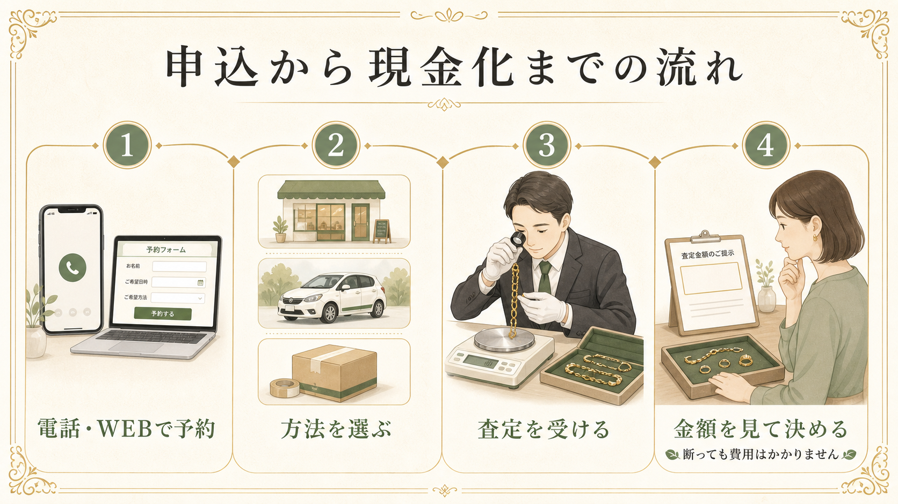
-
電話またはWEBで予約
WEBは1分ほど。30%UPを受けるなら電話から。店頭買取は予約不要です（大口の場合は事前連絡が推奨されています）。
-
査定方法を選ぶ
店頭＝その場で現金化したい方。出張＝品数が多い・重くて運べない方。宅配＝人に会わずに済ませたい方。
-
査定を受ける
出張はロゴなしの車で訪問。宅配は専用キットを使って送れます。送料・返送料・相場の適用日などは条件があるため、申込前に確認してください。
-
金額を見てから決める
納得したら売却します。断る場合の費用、とくに宅配の返送料は申込方法・品物で変わるため、事前に確認しておきましょう。
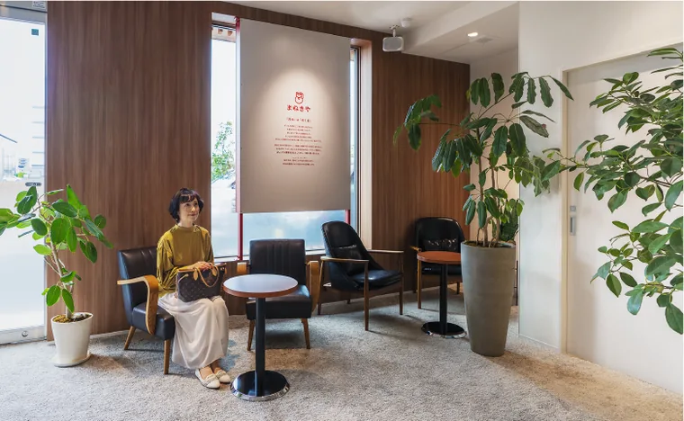
よくある質問
査定を頼んだら、売らないといけませんか。
店頭・出張の査定は、売却の約束ではありません。納得できなければ断れます。宅配は返送費用を含む条件が品物・査定額で変わるため、申込前に確認してください。
壊れたネックレスや、片方だけのピアスでも売れますか。
はい。金は素材そのものに価値があるため、壊れていても重さと純度で評価されます。デザインが古くても、留め具が壊れていても問題ありません。「もう使えないから」という理由で売られる方が大半です。
「K18」とは何ですか。
金の純度を表す記号です。K24が純金（99.99%）で、K18はそのうち18/24＝75%が金という意味。残り25%は強度を出すための銀や銅です。数字が大きいほど金の割合が高く、1グラムあたりの価格も高くなります。
刻印が見当たりませんが、大丈夫ですか。
はい。まねきやはX線分析機で純度を測定できます。刻印が消えている、そもそも無い場合でも査定は可能です。
金メッキでも売れますか。
メッキは表面に薄く金を塗ったもので、地金としての価値はほとんどありません。ただし、メッキだと思っていた物が本物だったというケースもあります。判断がつかない場合は一緒に見てもらうのが確実です。
買い取ってもらえない物はありますか。
有価証券、医薬品、PSEマークのない古い家電、ワシントン条約に該当する剥製などは買取できません。家具・家電も対象外です。
家族や近所に知られたくないのですが。
出張買取は社名ロゴの入っていない車で訪問します。宅配買取なら人に会わずに完結します。
手数料はかかりますか。
店頭・出張の査定料や出張料は無料と案内されていますが、宅配は返送料を含む条件が方法・品物で異なります。まねきやの金製品は、「ネットで見た」と伝えると通常10%の手数料が無料になる案内があります（分析料のみかかる場合があります）。適用条件は変わるため、申込時に確認し、表面の単価ではなく手数料込みの最終手取りで比べてください。
身分証は必要ですか。高額でも現金でもらえますか。
必要です。古物営業法により本人確認が求められます。運転免許証など、利用する方法で必要な本人確認書類を予約時に確認してください。金地金を1回200万円超で売却した場合は、買取業者が税務署へ支払調書を提出する制度があります。これは買取店側の報告であり、売り手に一律でマイナンバー提出が義務づけられるものではありません。高額時の支払方法は店舗・取引条件で異なるため、事前に直接確認しましょう。
遺品でも売れますか。名義が違いますが。
相続した品物は相続した方の所有物になりますので売却できます。本人確認書類はご自身のものをご用意ください。なおご本人以外の持ち物の売却は対応できません。
未成年でも売れますか。
18歳未満の方は、保護者の同伴または同意書が必須です。
出張買取はどこまで来てくれますか。
出張の対応地域は、品物・訪問先・予約状況で変わります。希望日時と品物を伝え、訪問可能かを予約時に確認してください。遠方の場合は、近隣の店頭査定や宅配も含めて比較するとスムーズです。
まとめ｜結局どっちを選ぶ？
| 状況 | おすすめ | 理由 |
|---|---|---|
| 店頭・出張でまねきやを利用しやすい | まねきや | 業者向け価格の案内、石・デザインの評価方針を確認しやすい |
| 近くで査定を受けたい・もう一社見積もりたい | おたからや | 世界1,920店舗以上。純度別の参考相場も確認できる |
| 今日中に現金化したい | 近くで空きのある店 | 営業時間・予約状況を確認し、最終手取りを聞いてから決める |
| 買い叩かれるのが不安 | まねきや | 相場公開＋X線測定で、根拠を検算できる |
| 夜しか時間が取れない | まねきや | 電話受付は21時まで。利用前に店舗・窓口の時間を確認 |
| 家具・家電も処分したい | 他社 | 両社とも家具・家電は対象外 |
金の相場は高い水準にあります。ただ、この先どうなるかは誰にも分かりません。
いま売ると決める必要はありません。ただ「いくらになるのか」は、無料で今日わかります。引き出しの奥で何年も眠っている物の値段を、一度だけ確かめてみる。その数字を見てから決めても、遅くはないはずです。
まずは、手数料込みでいくらになるか。
まねきや 電話での査定予約なら最大30%UP 電話で査定予約をする 受付 9:00〜21:00／通話無料 まねきやWEBで査定を予約する（1分） 金額を聞いてから決められます。宅配の返送料を含む条件は申込前に確認してください。- 本ページはプロモーションを含みます
- 本ページは、公開されている情報をもとに編集部が作成した比較・紹介記事です
- 掲載の順位・◎○△などの評価は当編集部の主観的な比較であり、買取価格の優劣を保証するものではありません。「最大」「相場100%」等のキャンペーンは対象品・上限・併用等の条件があります
- 掲載内容は2026年7月23日時点の情報です。最新の条件は各社公式サイトでご確認ください
- 買取価格は、相場変動・品物の状態・純度・重量により変動します。掲載の買取実績は特定の取引例であり、同等の金額を保証するものではありません
- キャンペーンの適用条件・上限額は申込時にご確認ください
- 税制に関する記載は一般的な説明です。個別の判断は税務署または税理士にご確認ください